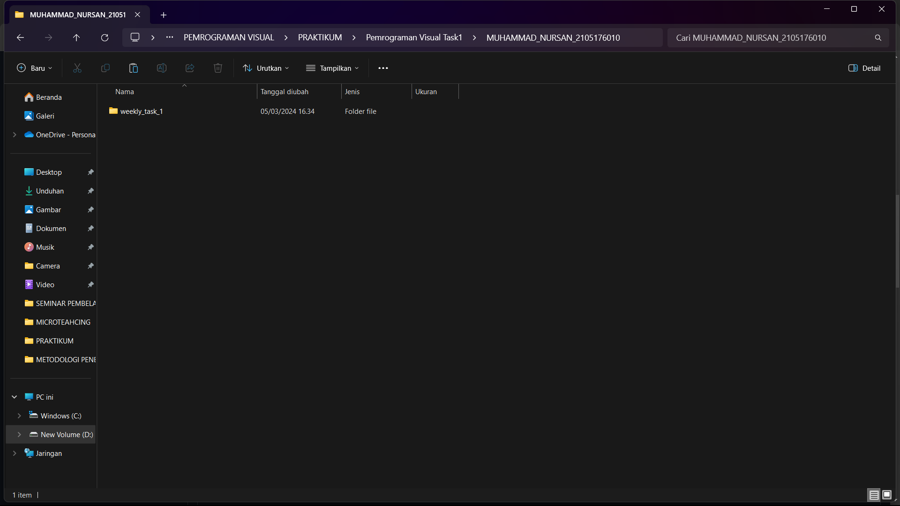

1. Clone Repositori

output :
 Penjelasan langkah pertama :
Ketika clone repositori telah selesai maka folder dengan nama "weekly_task_1" akan muncul dan mengisikan folder "contoh tugas" dan didalamnya terdapat file "task.py"